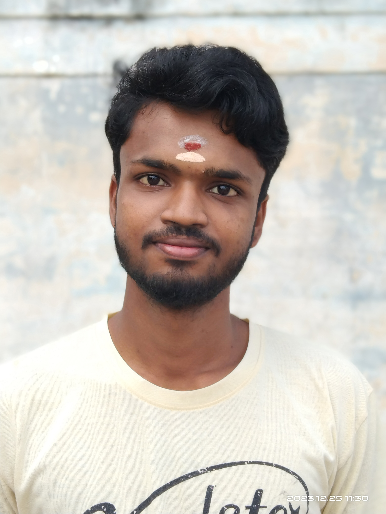

My Resume

Summary
Motivated and detail-oriented software developer with a passion for creating efficient and user-friendly applications. Seeking to leverage my skills in a dynamic development team.
Education
-
Master of Computer Applications - Anna University, BIT Campus, Tiruchirappalli (2024 - 2026)
-
Bachelor of Computer Applications - Dr.Kalaingar Government Arts College (2021 - 2024)
Skills
- HTML, CSS, JavaScript
- SQL(MySQL, Microsoft SQL Server), MongoDB
- Microsoft 365, Git & GitHub, VS Code
- Responsive Web Design
Certifications
- Full Stack Web Development Course [Ongoing] - Udemy
- SQL for Data Analysis – Internshala (Scored 84%)
- Microsoft 365 Training and Power BI - Microsoft
- Generative AI, Democratization of AI, Responsible AI
– ATAL FDP Program
- Quantum Computing - ATAL FDP Program
More About Me